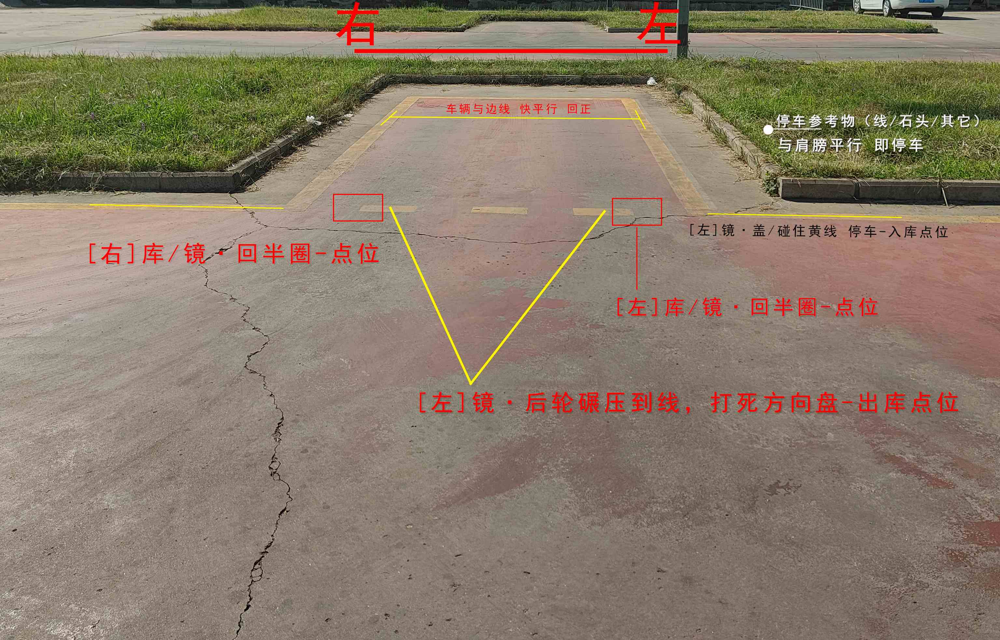
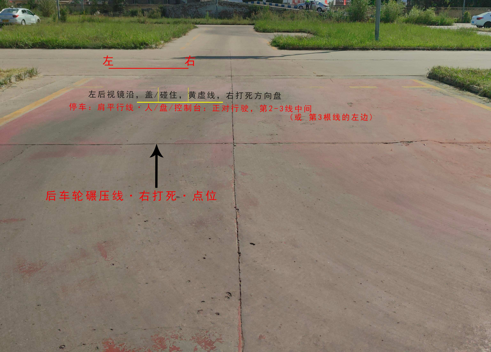
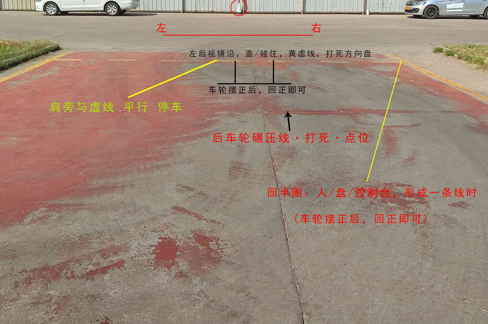

项目解析
倒车入库（半圈入库法）
操作步骤（左库）：
- 1 出库后；工作台最高位，机顶盖偏右点，对准T型库角，成一条直线后，回半圈；待车正后，回1圈
- 2 左肩旁与虚线，平行，停车
- 3 挂倒挡；当[左]后视镜，与虚线重合时，迅速左打死方向盘（本驾校，为车轮碾压到地上实线）
- 4 看[左]后视镜，露出第三根黄虚线，盖住一半时，迅速回半圈方向盘
- 5 看[右]后视镜，当车身与边线即将平行时，迅速回正方向盘
- 6 [左]后视镜与黄虚线重叠时，停车（本驾校放置参考物与肩旁对齐；或门把手盖碰住库实线）
- 7 【出库】挂1挡，看[左]后视镜，当车轮碾压虚线时，迅速右打死；车近正时回正，下一项目
操作步骤（先右库）：
- 1 从左往右数，第2-3根线的中间行驶；车轮尽量在第2根线的边线上
- 2 肩旁与虚线平行，停车
- 3 踩离合，挂倒挡；当[左]后视镜与虚线重合时，迅速向右打满方向盘（本驾校为车轮碾压到地上实线）
- 4 观察[右]后视镜，露出第三根黄虚线，盖住一半时，迅速回半圈方向盘
- 5 继续观察[右]后视镜，当车身与边线即将平行时，迅速回正方向盘
- 6 [左]后视镜与虚线重叠时，停车（本驾校放置参考物与肩旁对齐；或门把手盖碰住库实线）
- 7 【左倒库】挂1挡，看[左]后视镜，当车轮碾压虚线时，迅速左打死方向盘
扣分点
- • 不按规定路线、顺序行驶 - 100分
- • 车身出线 - 100分
- • 倒库不入 - 100分
- • 中途停车 - 5分/次（部分地区直接不合格）

左/右 倒车入库·倒库-点位

右 倒车入库·起步-点位

左 倒车入库·起步-点位
关键点位：
- 库角线与车身距离判断
- 后视镜中车轮与边线位置
- 停车时车头与库线对齐